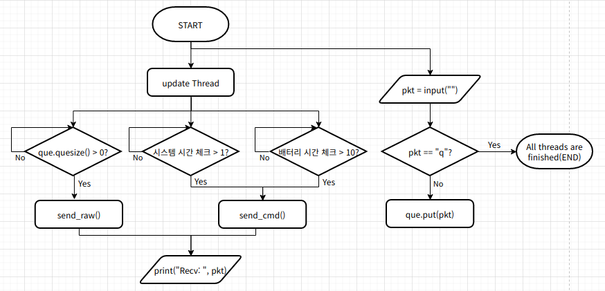
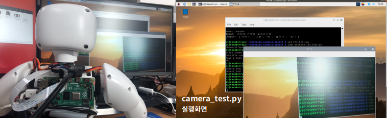
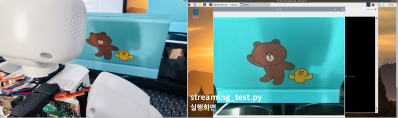

2.1.2 예제 파일 실행¶
다음의 코드를 입력하여 예제 파일을 실행할 수 있습니다.
~ $ git clone https://github.com/themakerrobot/openpibo-example.git
~ $ cd openpibo-example/{폴더명}
~/openpibo-example/{폴더명} $ sudo python3 {파일명}
아래는 audio 폴더 내에 있는 play_test.py를 실행하는 예제 코드입니다.
~ $ cd openpibo-example/audio
~/openpibo-example/audio $ sudo python3 play_test.py
2.2 예제 파일 코드 설명¶
openpibo-example의 코드는 다음과 같은 구조를 이루고 있습니다.

2.2.0 사전 학습¶
예제 파일에 공통으로 들어가는 코드 및 openpibo 라이브러리에 정의되어 있는 함수 사용에 관한 설명입니다.
import
openpibo의 lib를 import하여 구현합니다.
from {package}.{module} import {class}아래는 openpibo에 있는 audiolib의 cAudio 클래스를 import하는 예제입니다.
# openpibo-example/audio/play_test.py import os import sys # 상위 디렉토리 추가 (for utils.config) sys.path.append(os.path.dirname(os.path.abspath(os.path.dirname(__file__)))) from utils.config import Config as cfg # openpibo 라이브러리 경로 추가 sys.path.append(cfg.OPENPIBO_PATH + '/lib') from audio.audiolib import cAudio ...
함수
클래스를 사용하려면 인스턴스를 생성해야 하며, 인스턴스를 통해 해당 클래스의 함수를 호출할 수 있습니다.
아래는 cAudio 클래스의 함수를 호출하여 test.mp3 파일을 재생하는 코드입니다.
# openpibo-example/audio/play_test.py ... from audio.audiolib import cAudio def tts_f(): obj = cAudio() # 인스턴스 생성, obj는 cAudio 클래스의 인스턴스 obj.play(filename=cfg.TESTDATA_PATH+"/test.mp3", out='local', volume=-2000) # '인스턴스.메서드'로 cAudio 클래스의 play 호출 time.sleep(5) obj.stop() if __name__ == "__main__": tts_f()
함수의 호출
함수 호출 시, 해당 함수가 요구하는 매개변수(parameter)를 같이 넘겨줘야 합니다.
out='local',volume='-2000'처럼 기본 인자 값이 설정되어 있는 경우, 인자(argument)를 넘겨주지 않아도 함수 호출이 가능합니다.(호출 시 인자가 없으면 기본 인자 값이 활용됨)
함수는 기본적으로 인자를 위치로 판단합니다.
키워드 인자로 전달시 순서가 바뀌어도 함수 호출이 가능합니다.
아래는 cAudio 클래스 및 함수 호출 예제 코드입니다.
# openpibo/lib/audio/audiolib.py import os class cAudio: def play(self, filename, out='local', volume='-2000'): os.system("omxplayer -o {} --vol {} {} &".format(out, volume, filename)) def stop(self): os.system('sudo pkill omxplayer')
# play 함수 호출 obj.play(filename=cfg.TESTDATA_PATH+"/test.mp3", out='local', volume=-2000) # 방법1 obj.play(filename=cfg.TESTDATA_PATH+"/test.mp3") # 방법2 (local, volume 기본 인자값이 있으므로 가능) obj.play(cfg.TESTDATA_PATH+"/test.mp3", 'local', -2000) # 방법3 (인자의 순서가 맞기 때문에 변수명 안써도 가능) obj.play(out='local', volume=-2000, filename=cfg.TESTDATA_PATH+"/test.mp3") # 방법4 (키워드 인자의 경우 순서가 바뀌어도 가능)
단, 아래와 같이 키워드 인자를 활용한 뒤에 위치 인자를 활용할 수는 없습니다.
obj.play(filename=cfg.TESTDATA_PATH+"/test.mp3", 'local', -2000) (X)
if __name__ == "__main__"__name__: 현재 모듈의 이름을 담고 있는 내장 변수입니다.해당 프로그램을 직접 실행했을 경우, 참이 되어 main 함수를 실행합니다.
다른 프로그램에서 import하여 사용할 경우, main 함수는 실행하지 않습니다.
2.2.1 Audio¶
play_test.py
mp3 파일을 재생 및 정지합니다.
...
from audio.audiolib import cAudio
# test.mp3 파일 5초 재생 후 정지
def tts_f():
obj = cAudio()
obj.play(filename=cfg.TESTDATA_PATH+"/test.mp3", out='local', volume=-2000)
time.sleep(5) # 5초동안 프로세스 정지
obj.stop()
if __name__ == "__main__":
tts_f()
play_test.py 실행
pi@raspberrypi:~/openpibo-example/audio $ sudo python3 play_test.py
2.2.2 Device¶
1) device_once_test.py
인자값으로 명령어를 입력하여 파이보를 제어합니다.
...
from device.devicelib import cDevice
import argparse
def main(args):
obj = cDevice()
print('Send:', args.command) # 실행한 명령어 출력
data = obj.send_raw(args.command) # Device에 메시지 전송하고 응답받음
print('Receive:', data) # Device로부터 받은 응답 출력
if __name__ == "__main__":
parser = argparse.ArgumentParser() # 인자값을 받을 수 있는 인스턴스 생성
parser.add_argument('--command', help='check specific decvice', required=True) #default=0, 입력받고자 하는 인자의 조건 설정
args = parser.parse_args() # 명령창(터미널)에 주어진 인자를 파싱하여 args에 저장
main(args) # 입력받은 인자값을 인수로 main 함수 실행
device_once_test.py 실행
아래는 PIBO의 양쪽 눈 색깔을 변경(24)하는 명령어 입력 코드입니다. (command 구조는 [1.3.2 Device제어-참고자료]에 있습니다.)
pi@raspberrypi:~/openpibo-example/device $ sudo python3 device_once_test.py --command "#24:255,0,0,0,0,255:!"
device_once_test.py 결과
Send: #24:255,0,0,0,0,255:!
Receive: 24:oK

2) device_test.py
명령어를 입력하여 파이보를 제어합니다.
...
from device.devicelib import cDevice
if __name__ == "__main__":
obj = cDevice()
data = obj.send_cmd(obj.code['PIR'], "on")
# q를 입력할 때까지 계속해서 명령어 입력 가능
while True:
pkt = input("")
if pkt == 'q':
break
ret = obj.send_raw(pkt)
print(ret)
device_test.py 실행
pi@raspberrypi:~/openpibo-example/device $ sudo python3 device_test.py
device_test.py 결과
아래는 PIBO의 눈 색깔을 변경(20), 배터리 체크(15), 버전 확인(10) 명령어를 입력했을 때의 결과입니다.
#20:255,0,255:!
20:ok
#15:!
15:100%
#10:!
10:FWN200312A
q

3) device_test_with_thread.py
thread를 사용하여 코드를 병렬 수행합니다.
파이썬은 기본적으로 Single Thread에서 순차적으로 코드를 실행합니다.
따라서, 코드 실행 중 Blocking Function(ex. input)을 만나면 그 함수의 실행이 끝날 때까지 대기합니다.
이때 threading 모듈을 이용한 multi thread를 사용하면 코드의 병렬 실행이 가능합니다.
thread: 프로세스 내에서 실제로 작업을 수행하는 주체, 프로그램(프로세스) 실행 단위
daemon thread
메인 스레드가 종료될 때 자신의 실행 상태와 상관없이 종료되는 서브 스레드
daemon 속성을 True로 변경하여 사용 (default: False)
start()가 호출되기 전에 설정
...
from device.devicelib import cDevice
import time
from threading import Thread, Lock
from queue import Queue
obj = cDevice()
que = Queue()
def decode_pkt(pkt):
print("Recv:", pkt)
def update():
# 현재 timestamp 얻기
system_check_time = time.time()
battery_check_time = time.time()
while True:
# que에 pkt가 존재하면 pkt를 제거하고 반환하여 Device에 메시지 전송 & decode_pkt 실행
if que.qsize() > 0:
data = obj.send_raw(que.get())
decode_pkt(data)
if time.time() - system_check_time > 1: # 시스템 메시지 1초 간격 전송
data = obj.send_cmd(obj.code['SYSTEM'])
decode_pkt(data)
system_check_time = time.time()
if time.time() - battery_check_time > 10: # 배터리 메시지 10초 간격 전송
data = obj.send_cmd(obj.code['BATTERY'])
decode_pkt(data)
battery_check_time = time.time()
time.sleep(0.01)
if __name__ == "__main__":
obj.send_cmd(obj.code['PIR'], "on")
t = Thread(target=update, args=())
t.daemon = True # main thread 종료시 update 메서드 종료
t.start() # update 메서드 실행
# main thread
# 사용자가 q를 입력할 때까지 무한 반복, que에 pkt 삽입
while True:
pkt = input("")
if pkt == 'q':
break
que.put(pkt)

device_test_with_thread.py 실행
pi@raspberrypi:~/openpibo-example/device $ sudo python3 device_test_with_thread.py
device_test_with_thread.py 결과
Recv: 40:-----
Recv: 40:-----
Recv: 40:-----
Recv: 40:person-----
Recv: 40:person-----
Recv: 40:person-----
Recv: 40:person-----
Recv: 40:person-----
Recv: 40:person-----
Recv: 15:100%
Recv: 40:person-----
Recv: 40:nobody-----
Recv: 40:-----
Recv: 40:-----
Recv: 40:-----
Recv: 40:-----
Recv: 40:-----
Recv: 40:person-----
Recv: 40:person-----
Recv: 40:person-----
Recv: 15:100%
Recv: 40:person-----
Recv: 40:person-----
Recv: 40:person-----
q
1초마다 PIR Sensor의 값 전송, 10초 간격으로 배터리 메시지 전송
q 입력시 메인 스레드가 종료되므로 update 메서드 종료
2.2.3 Motion¶
1) motion_test.py
...
from motion.motionlib import cMotion
# wave3 모션 10번 반복
if __name__ == "__main__":
m = cMotion(conf=cfg)
m.set_motion(name="wave3", cycle=10)
아래는 motion_db.json의 일부입니다. motion_db는 cMotion.get_motion(name=None) 함수로 확인할 수 있습니다.( [1.3.3 Motion 생성-cMotion 클래스] 참고 )
{
...
"wave3": {
"comment":"wave",
"init_def":1,
"init":[0,0,0,-25,0,0,0,0,0,25],
"pos":[
{ "d": [ 0, 0, 0, 25, 0, 0, 20, 0, 0, 25 ] , "seq": 450 },
{ "d": [ -20, 999, 999, 999, 999, 999, 999, 999, 999, -25 ] , "seq": 900 },
{ "d": [ 999, 999, 999, -25, 20, 999, 0, 999, 999, 999 ] , "seq": 1350 },
{ "d": [ 0, 999, 999, 999, 999, 999, 999, 999, 999, 25 ] , "seq": 1800 },
{ "d": [ -20, 999, 999, 999, 999, 999, 0, 999, 999, -25 ] , "seq": 2250 },
{ "d": [ 999, 999, 999, 25, 999, 999, 20, 999, 999, 999 ] , "seq": 2700 },
{ "d": [ 0, 999, 999, 999, -20, 999, 999, 999, 999, 25 ] , "seq": 3150 },
{ "d": [ 999, 999, 999, -25, 999, 999, 0, 999, 999, 999 ] , "seq": 3600 }
]
},
...
}
motion_test.py 실행
pi@raspberrypi:~/openpibo-example/motion $ sudo python3 motion_test.py
2) motor_test.py
...
from motion.motionlib import cMotion
import time
m = cMotion(conf=cfg)
def move(n, degree, speed, accel):
m.set_speed(n, speed) # n번 모터의 속도를 speed로 변경
m.set_acceleration(n, accel) # n번 모터의 가속도를 accel로 변경
m.set_motor(n, degree) # n번 모터의 위치를 degree로 이동
# 'move() 실행 -> 1초 휴식 -> move() 실행 -> 1초 휴식'을 무한 반복
def test():
while True:
move(2, 30, 100, 10)
move(8, 30, 10, 10)
time.sleep(1) # 단위: 초(sec)
move(2, -30, 100, 10)
move(8, -30, 10, 10)
time.sleep(1)
if __name__ == "__main__":
test()
motor_test.py 실행
pi@raspberrypi:~/openpibo-example/motion $ sudo python3 motor_test.py
3) multi_motor_test.py
...
from motion.motionlib import cMotion
import time
# 'set_motors() 실행 -> 1.1초 휴식 -> set_motors() 실행 -> 1.1초 휴식'을 무한 반복
def move_test():
m = cMotion(conf=cfg)
while True:
m.set_motors(positions=[0,0,30,20, 30,0, 0,0,30,20], movetime=1000)
time.sleep(1.1)
m.set_motors(positions=[0,0,-30,-20, -30,0, 0,0,-30,-20], movetime=1000)
time.sleep(1.1)
if __name__ == "__main__":
move_test()
multi_motor_test.py 실행
pi@raspberrypi:~/openpibo-example/motion $ sudo python3 multi_motor_test.py
4) pymotor_test.py
...
from motion.motionlib import cPyMotion
import time
m = cPyMotion()
def move(n, speed, accel, degree):
m.set_speed(n, speed)
m.set_acceleration(n, accel)
m.set_motor(n, degree)
# 2초 간격으로 move() 실행 무한 반복
def test():
while True:
move(2, 50, 0, 30)
time.sleep(2)
move(2, 50, 10, -30)
time.sleep(2)
# Init 출력 -> move() -> 1초 휴식 -> Start 출력 -> test()
if __name__ == "__main__":
print("Init")
move(2, 20, 0, 0)
time.sleep(1)
print("Start")
test()
pymotor_test.py 실행
pi@raspberrypi:~/openpibo-example/motion $ sudo python3 pymotor_test.py
pymotor_test.py 결과
Init
Start
2.2.4 OLED¶
1) figure_test.py
OLED display에 도형과 선을 출력합니다.
...
from oled.oledlib import cOled
import time
def oled_f():
oObj = cOled(conf=cfg)
oObj.clear() # 화면 지우기
oObj.draw_rectangle((10,10,30,30) ,True) # 길이가 20인 채워진 사각형 그리기
oObj.draw_ellipse((70,40,90,60) ,False) # 지름이 20인 빈 원 그리기
oObj.draw_line((15,15,80,50)) # 선 그리기
oObj.show() # 화면에 표시
if __name__ == "__main__":
oled_f()
figure_test.py 실행
pi@raspberrypi:~/openpibo-example/oled $ sudo python3 figure_test.py
figure_test.py 결과

2) image_test.py
OLED display에 이미지를 출력합니다. (128X64만 가능합니다.)
...
from oled.oledlib import cOled
import time
# 화면에 clear.png 이미지 5초간 표시
def oled_f():
oObj = cOled(conf=cfg)
oObj.draw_image(cfg.TESTDATA_PATH +"/clear.png") # clear.png 그리기
oObj.show() # 화면에 표시
time.sleep(5) # 5초동안 프로세스 정지
oObj.clear() # 화면 지우기
oObj.show()
if __name__ == "__main__":
oled_f()
image_test.py 실행
pi@raspberrypi:~/openpibo-example/oled $ sudo python3 image_test.py
image_test.py 결과

3) self_test.py
직접 실습해보세요.
...
from oled.oledlib import cOled
def oled_f():
print('my oled design')
if __name__ == "__main__":
oled_f()
self_test.py 실행
pi@raspberrypi:~/openpibo-example/oled $ sudo python3 self_test.py
4) text_test.py
OLED display에 문자열을 출력합니다.
...
from oled.oledlib import cOled
# (0,0), (0,20)에 15 크기의 text 표시
def oled_f():
oObj = cOled(conf=cfg)
oObj.set_font(size=15)
oObj.draw_text((0, 0), "안녕? 난 파이보야 ") # (0,0)에 문자열 출력
oObj.draw_text((0,20), "☆ ★ ") # (0,20)에 문자열 출력
oObj.show() # 화면에 표시
'''
for count in range(5):
oObj.clear()
oObj.draw_text((10,10), "Hello World:{}".format(count))
oObj.show()
time.sleep(1)
oObj.clear()
'''
if __name__ == "__main__":
oled_f()
text_test.py 실행
pi@raspberrypi:~/openpibo-example/oled $ sudo python3 text_test.py
text_test.py 결과

2.2.5 Speech¶
1) chatbot_test.py
입력한 문장에 대해 형태소 분석을 실시하여 파이보와 대화를 시작합니다.
사용자가 입력한 문장에 db의 key 값(날씨, 음악, 뉴스)이 있으면 해당 함수를 실행하고, 없다면 대화봇을 실행합니다.
...
from speech.speechlib import cDialog
def weather(cmd):
lst, _type = ["오늘", "내일"], None
# 분석한 문장 중 "오늘", "내일"이 있다면 _type=item으로 설정
for item in lst:
if item in cmd:
_type = item
if _type == None:
print("BOT > 오늘, 내일 날씨만 가능해요. ")
else:
print("BOT > {} 뉴스 알려줄게요.".format(_type))
def music(cmd):
lst, _type = ["발라드", "댄스", "락"], None
# 분석한 문장 중 "발라드", "댄스", "락"이 있다면 _type=item으로 설정
for item in lst:
if item in cmd:
_type = item
if _type == None:
print("BOT > 발라드, 락, 댄스 음악만 가능해요.")
else:
print("BOT > {} 음악 틀어줄게요.".format(_type))
def news(cmd):
lst, _type = ["경제", "스포츠", "문화"], None
# 분석한 문장 중 "경제", "스포츠", "문화"가 있다면 _type=item으로 설정
for item in lst:
if item in cmd:
_type = item
if _type == None:
print("BOT > 경제, 문화, 스포츠 뉴스만 가능해요.")
else:
print("BOT > {} 뉴스 알려줄게요.".format(_type))
db = {
"날씨":weather,
"음악":music,
"뉴스":news,
}
# 사용자가 입력한 문장에 대해 형태소 분석을 실시하여 파이보가 실행하는 함수가 달라짐
def main():
obj = cDialog(conf=cfg)
print("대화 시작합니다.")
while True:
c = input("입력 > ")
matched = False
if c == "그만":
break
# 사용자가 입력한 질문에 대한 형태소 분석
d = obj.mecab_morphs(c)
#print("형태소 분석: ", d)
# 분석한 문장 중 "날씨", "음악", "뉴스"가 있다면 해당 key값의 함수 실행
for key in db.keys():
if key in d:
db[key](d)
matched = True
# key 값이 없다면 대화봇 실행
if matched == False:
print("대화봇 > ", obj.get_dialog(c))
if __name__ == "__main__":
main()

chatbot_test.py 실행
pi@raspberrypi:~/openpibo-example/speech $ sudo python3 chatbot_test.py
chatbot_test.py 결과
대화 시작합니다.
입력 > 댄스 음악 추천해줘
BOT > 댄스 음악 틀어줄게요.
입력 > 주말에 뭐하지
대화봇 > 사탕 만들어요.
입력 > 사탕 싫어
대화봇 > 싫어하지 말아요.
입력 > 그만
2) mecab_test.py
사용자가 입력한 문장을 분석합니다. 3가지 모드 선택이 가능합니다.
...
from speech.speechlib import cDialog
# mode(pos, morphs, nouns)에 따른 문장 분석
def mecab_f(string, mode):
print("Input: ", string)
obj = cDialog(conf=cfg)
if mode == "pos":
data = obj.mecab_pos(string)
elif mode == "morphs":
data = obj.mecab_morphs(string)
elif mode == "nouns":
data = obj.mecab_nouns(string)
print("Output: ", data)
if __name__ == "__main__":
mecab_f("아버지 가방에 들어가신다", "nouns")
mecab_test.py 실행
pi@raspberrypi:~/openpibo-example/speech $ sudo python3 mecab_test.py
mecab_test.py 결과
Input: 아버지 가방에 들어가신다
Output: ['아버지', '가방']
# (+) pos 결과
Input: 아버지 가방에 들어가신다
Output: [('아버지', 'NNG'), ('가방', 'NNG'), ('에', 'JKB'), ('들어가', 'VV'), ('신다', 'EP+EC')]
# (+) morphs 결과
Input: 아버지 가방에 들어가신다
Output: ['아버지', '가방', '에', '들어가', '신다']
NNG: 일반 명사 / JKB: 부사격 조사 / VV: 동사 / EP: 선어말 어미 / EC: 연결 어미
( 품사 태그표: https://docs.google.com/spreadsheets/d/1OGAjUvalBuX-oZvZ_-9tEfYD2gQe7hTGsgUpiiBSXI8/edit#gid=0 )
3) stt_test.py
...
from speech.speechlib import cSpeech
obj = cSpeech(conf=cfg)
# 음성 언어를 문자 데이터로 변환하여 출력
ret = obj.stt()
print(ret)
stt_test.py 실행
pi@raspberrypi:~/openpibo-example/speech $ sudo python3 stt_test.py
4) translate_test.py
문장을 번역합니다.
...
from speech.speechlib import cSpeech
# "안녕하세요"를 영어로 번역 후 출력
def translate_f():
obj = cSpeech(conf=cfg)
string = "안녕하세요"
ret = obj.translate(string, to="en")
print("Input:", string)
print("Output:", ret)
if __name__ == "__main__":
translate_f()
translate_test.py 실행
pi@raspberrypi:~/openpibo-example/speech $ sudo python3 translate_test.py
translate_test.py 결과
Input: 안녕하세요
Output: Good morning
5) tts_test.py
문자 데이터를 음성 언어로 변환합니다.
...
from speech.speechlib import cSpeech
from audio.audiolib import cAudio
# tts.mp3 파일의 문자 데이터를 음성 언어로 변환 후, 파이보 스피커에 출력
def tts_f():
tObj = cSpeech(conf=cfg)
filename = cfg.TESTDATA_PATH+"/tts.mp3"
tObj.tts("<speak>\
<voice name='MAN_READ_CALM'>안녕하세요. 반갑습니다.<break time='500ms'/></voice>\
</speak>"\
, filename)
print(filename)
aObj = cAudio()
aObj.play(filename, out='local', volume=-1500) # 파이보 스피커로 filename 출력
if __name__ == "__main__":
tts_f()
speak
기본적으로 모든 음성은 태그로 감싸져야 한다.
태그 하위로
,를 제외한 모든 태그가 존재할 수 있다.문장, 문단 단위로 적용하는 것을 원칙으로 한다. 한 문장 안에서 단어별로 태그를 감싸지 않는다.
<speak> 안녕하세요. 반가워요. </speak>
voice
음성의 목소리를 변경하기 위해 사용하며, name attribute를 통해 원하는 목소리를 지정한다. 제공되는 목소리는 4가지이다.
WOMAN_READ_CALM: 여성 차분한 낭독체 (default)
MAN_READ_CALM: 남성 차분한 낭독체
WOMAN_DIALOG_BRIGHT: 여성 밝은 대화체
MAN_DIALOG_BRIGHT: 남성 밝은 대화체
하위로
,를 제외한 모든 태그(kakao: effet, prosody, break, audio, say-as, sub)가 존재할 수 있다.문장, 문단 단위로 적용하는 것을 원칙으로 한다. 한 문장 안에서 단어별로 태그를 감싸지 않는다.
<speak> <voice name="WOMAN_READ_CALM"> 지금은 여성 차분한 낭독체입니다.</voice> <voice name="MAN_READ_CALM"> 지금은 남성 차분한 낭독체입니다.</voice> <voice name="WOMAN_DIALOG_BRIGHT"> 안녕하세요. 여성 밝은 대화체예요.</voice> <voice name="MAN_DIALOG_BRIGHT"> 안녕하세요. 남성 밝은 대화체예요.</voice> </speak>
tts_test.py 실행
pi@raspberrypi:~/openpibo-example/speech $ sudo python3 tts_test.py
2.2.6 Vision¶
OpenCV DNN 모듈
딥러닝 학습은 Caffe 프레임워크에서 진행하고, 학습된 모델을 dnn 모듈로 불러와서 실행(
cv2.dnn.readNet())
1) camera_test.py
사진을 촬영하고 저장합니다.
...
from vision.visionlib import cCamera
def test_func():
# instance
cam = cCamera()
# Capture / Read file
# 이미지 촬영
img = cam.read()
#img = cam.imread("/home/pi/test.jpg")
# Write(test.jpg라는 이름을 촬영한 이미지 저장)
cam.imwrite("test.jpg", img)
# display (only GUI): 3초동안 'TITLE'이라는 제목으로 이미지 보여줌
cam.imshow(img, "TITLE")
cam.waitKey(3000) # 단위: ms
if __name__ == "__main__":
test_func()
camera_test.py 실행
pi@raspberrypi:~/openpibo-example/vision $ sudo python3 camera_test.py
camera_test.py 결과

2) detect_test.py
이미지의 객체/QR코드/문자를 인식합니다.
...
from vision.visionlib import cCamera
from vision.visionlib import cDetect
def test_func():
cam = cCamera() # cCamera 클래스에 대한 객체 생성
det = cDetect(conf=cfg)
# Capture / Read file
img = cam.read()
#img = cam.imread("image.jpg")
print("Object Detect: ", det.detect_object(img)) # 객체 인식
print("Qr Detect:", det.detect_qr(img)) # QR코드 인식
print("Text Detect:", det.detect_text(img)) # 문자 인식
if __name__ == "__main__":
test_func()
detect_test.py 실행
pi@raspberrypi:~/openpibo-example/vision $ sudo python3 detect_test.py
detect_test.py 결과
Object Detect: [{'name': 'bus', 'score': 80.67924976348877, 'position': (2, 0, 627, 478)}]
Qr Detect: {'data': 'http://www.wando.go.kr/l04xd2@', 'type': 'QRCODE'}
Text Detect: ’
> fxr
cends, This restaurant has ungie portions
—ARBTSORE
ㅅ 피 메 엔 로
oO a |
Fs

3) draw_test.py
이미지에 그림과 글씨를 입력합니다.
...
from vision.visionlib import cCamera
def test_func():
cam = cCamera()
# Capture / Read file
img = cam.read()
#img = cam.imread("/home/pi/test.jpg")
cam.rectangle(img, (100,100), (300,300), thickness=2) # 화면의 (100,100), (300,300) 위치에 사각형 그리기
cam.putText(img, "Hello Camera", (50, 50), thickness=2) # 화면의 (50,50) Hello Camera 쓰기
cam.imwrite("test.jpg", img) # test.jpg로 이미지 저장
# display (only GUI): 3초동안 'TITLE'이라는 제목으로 이미지 보여줌
cam.imshow(img, "TITLE")
cam.waitKey(3000)
if __name__ == "__main__":
test_func()
draw_test.py 실행
pi@raspberrypi:~/openpibo-example/vision $ sudo python3 draw_test.py
draw_test.py 결과

4) face_recognize_test.py
이미지에서 얼굴을 찾아 나이와 성별을 추정합니다.
...
from vision.visionlib import cCamera
from vision.visionlib import cFace
def test_f():
cam = cCamera()
faceObj = cFace(conf=cfg)
# 이미지 촬영
img = cam.read()
#img = cam.imread("/home/pi/test.jpg")
disp = img.copy()
# 이미지에서 얼굴 탐색
faceList = faceObj.detect(img)
if len(faceList) < 1:
print("No face")
return
# 나이, 성별 추정
ret = faceObj.get_ageGender(img, faceList[0])
age = ret["age"]
gender = ret["gender"]
# 얼굴 위치 좌표에 사각형 그리기
x,y,w,h = faceList[0]
cam.rectangle(disp, (x,y), (x+w, y+h))
# 등록된 얼굴 인식(동일인이라 판정되면 이름, 아니면 Guest)
ret = faceObj.recognize(img, faceList[0])
name = "Guest" if ret == False else ret["name"]
cam.putText(disp, "{}/ {} {}".format(name,gender,age), (x-10, y-10), size=0.5)
# 모니터에서 3초간 VIEW라는 제목으로 이미지 확인
cam.imshow(disp, "VIEW")
cam.waitKey(3000)
# test.jpg로 이미지 저장
cam.imwrite("test.jpg", disp)
if __name__ == "__main__":
test_f()
face_recognize_test.py 실행
pi@raspberrypi:~/openpibo-example/vision $ sudo python3 face_recognize_test.py
face_recognize_test.py 결과

5) face_train_test.py
이미지에서 얼굴을 찾아 학습하여 데이터베이스에 저장하고 로드한 뒤 다시 삭제합니다.
...
from vision.visionlib import cCamera
from vision.visionlib import cFace
def test_func():
cam = cCamera()
faceObj = cFace(conf=cfg)
print("Start DB:", faceObj.get_db()[0])
# 이미지 촬영
img = cam.read()
#img = cam.imread("/home/pi/test.jpg")
faces = faceObj.detect(img)
if len(faces) < 1:
print(" No face")
else:
# 얼굴 학습(학습할 이미지 데이터, 얼굴 1개 위치, 학습할 얼굴 이름)
print(" Train:", faceObj.train_face(img, faces[0], "yjlee"))
print("After Train, DB:", faceObj.get_db()[0])
img = cam.read()
faces = faceObj.detect(img)
if len(faces) < 1:
print(" No face")
else:
print(" Recognize:", faceObj.recognize(img, faces[0]))
# 얼굴 데이터베이스를 파일로 저장
faceObj.save_db("./facedb")
# 얼굴 데이터베이스 초기화
faceObj.init_db()
print("After reset db, DB:", faceObj.get_db()[0])
# 얼굴 데이터베이스 파일 로드
faceObj.load_db("facedb")
print("After Load db, DB:", faceObj.get_db()[0])
# 등록된 얼굴 삭제
faceObj.delete_face("yjlee")
print("After Delete face:", faceObj.get_db()[0])
if __name__ == "__main__":
test_func()
face_train_test.py 실행
pi@raspberrypi:~/openpibo-example/vision $ sudo python3 face_train_test.py
face_train_test.py 결과
Start DB: []
Train: None
After Train, DB: ['yjlee']
Recognize: {'name': 'yjlee', 'score': 0.02}
After reset db, DB: []
After Load db, DB: ['yjlee']
After Delete face: []
6) streaming_test.py
모니터에 이미지를 스트리밍합니다.
...
from vision.visionlib import cCamera
# 모니터에 3초간 이미지 스트리밍
def test_func():
# instance
cam = cCamera()
# For streaming (only GUI)
cam.streaming(timeout=3)
if __name__ == "__main__":
test_func()
streaming_test.py 실행
pi@raspberrypi:~/openpibo-example/vision $ sudo python3 streaming_test.py
streaming_test.py 결과
